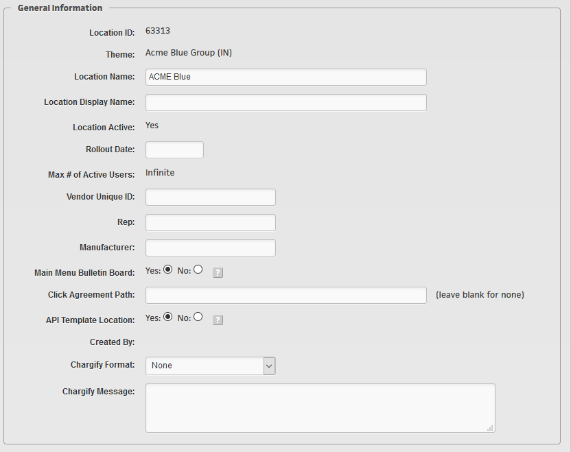
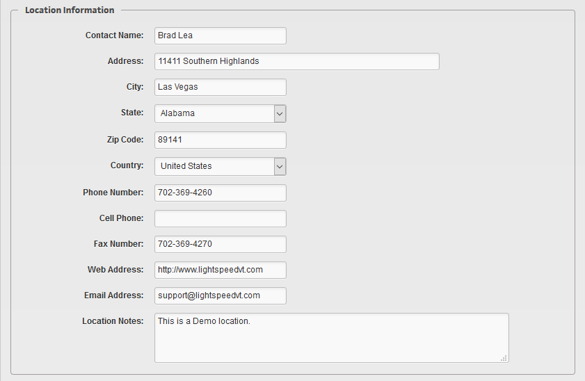
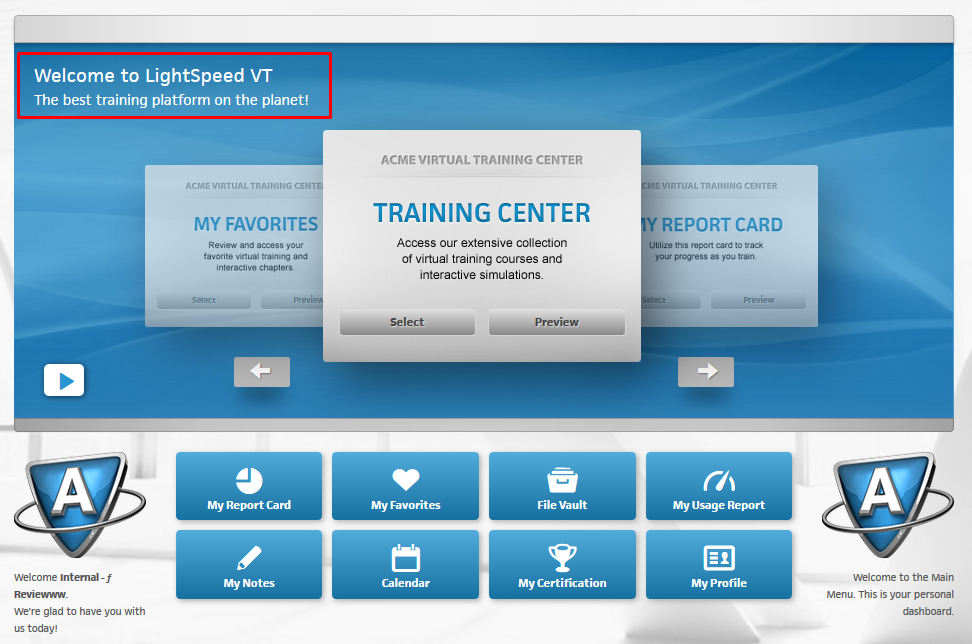
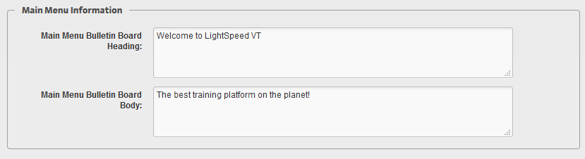
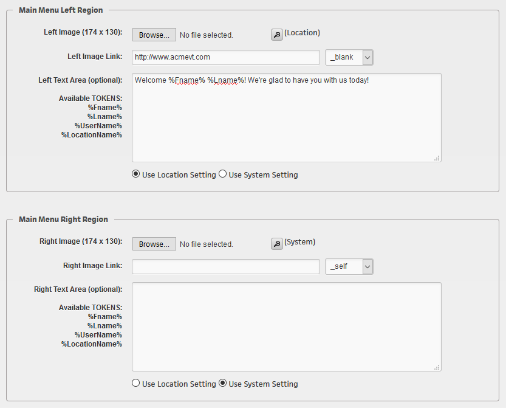
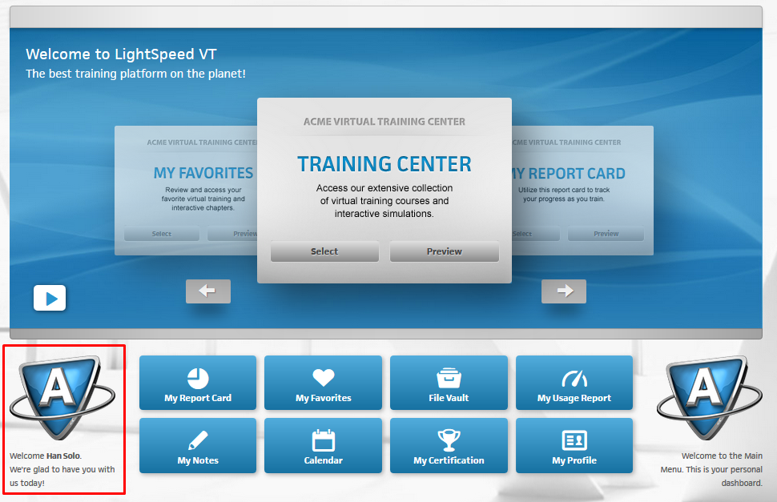

Creating New Locations
To create a new location, navigate to the Super User Dashboard and select "Create New Location" under 102 - Location Management.
This will allow you to create a new location in any System that you currently have Super User Access to.

Note
You can only create a new location if you have at least one "Location Template" active. To create a "Template Location", access that location through "102 - Location Management", navigate to the location you wish to use as a template, then select "Location Settings" from the Quick Links menu, and then change the "Template Location" toggle to "Yes". Example:

Next, fill out all of the applicable information. Required fields are noted throughout this menu with an asterisk:
New Location Information
- Source Location Template
- As described above, you will only be able to select from Locations that are flagged as a "Template Location".
- New Location Name
- Enter the Location Name here - this can be updated any time after location creation.
- Max. # of Users
- The Maximum number of users allowed for this location. Leave blank for infinite.
- Rep
- Who sold it
- Vendor Unique ID
- This can be left blank - unless you wish to use it for additional reporting and tracking information.
- Contact Name
- Enter a Contact Name and Address information for the Location here.
- Address
- City / State / Zip
- Country
- Phone
- Cell Phone
- Fax
- Web Address
- Email Address
Example:

Billing Information
- Accounting Format
- Location Pricing or Per User Pricing?
- License Frequency
- How often do they pay this amount?
- Begin Bill Date
- The first date to begin billing for this location (Defaults to today's date)
- Contract End Date
- When will the contract for this location end?
- Grace Period Date
- This option will allow you to add an additional month 'Grace Period.' If the location decides to end their contract, you can allow an additional set of time before the location will be turned off (or auto turn off)
- Billing Notes
- Note anything you need to about this billing information for the Accounting Department
- Contract
- Attach a copy of the contract for this location if you have one.
Location Notes
In this section you can add any additional notes or comments. Note: This information can also be searchable under "Search and Manage Locations".
Additional Location Settings (available after location creation)
General Information
- Location ID
- The Location ID is assigned to each location upon creation. This number is unique to this location, and can be used to help identify locations if the need arises.
- Theme
- This tells you which Theme this location is currently using.
- Location Name
- The Location Name is what appears at the top right of the screen, on every screen. This helps admins and end users alike identify which location they are currently logged into. The Location Name will also be what shows up on all reporting screens.
- Location Display Name
- This display name can be used to overwrite the Location Name field above. You would want to use this field when locations may have the same or similar names. (For example, there could be 10 "Acme Blue" locations, so as to avoid any confusion for admins, you could label the location name for this "Acme Blue 1" - while the Location Display Name could remain "Acme Blue" - then, as an admin, when you searched for "Acme Blue" you would see a different name for this location.)
- Location Active: Yes/No
- Here you can see if the location is active or not. If you have the proper Super User B Privileges, you can turn locations On or Off here.
- Rollout Date
- In this section you can add an additional date that is searchable on some Super User Reports. This field is useful for locations that are set up prior to being truley activated.
- Max # of Active Users
- If you have the Super User B Privilege to modify this field, it will appear open for you. A quick note on this: You cannot set the User Cap lower than the current Active User count. In order to lower the User count, you must first deactivate some users.
- Vendor Unique ID
- This field is searchable on some Reports and can be used to add a unique identifier to locations to help with organization.
- Rep
- If this particular location is Represented by a specific Admin, you can indicate that here.
- Manufacturer
- This is sort of a legacy field, it is more often used for Automotive Industry locations, where some needed to by identified by Manufacturer. However, you can use this field for anything you need, treat it as another unique identifier.
- Main Menu Bulletin Board: Yes/No
- If this is set to "Yes", then Manager A and above can update the Bulletin Board information. If it is set to "No", then only Super User C and above can update the Board.
- Click Agreement Path
- Here is where we can set a file path to a terms of service/click agreement. If you need to add a click agreement to your Location, please reach out to the Client Care department for assistance.
- API Template Location
- This was mentioned in the NOTE above. If this is set to "Yes", then this location will become available to create additional locations from it. You would want to use toggle for multiple locations if specific locations had different courseware setups, for example.
- Created By
- This will tell you who the location was created by.
- Chargify Format
- If this location was automatically created by Chargify, this section and the next will automatically be filled out.
- Chargify Message
- This will automatically be filled out by Chargify.

Location Information
In the Location Information section, if your location has a physical address or owner, you can set the name and address here. You can also add "Location Notes" to this section for anything you may want to document. *Note: "Location Notes" will appear as one of the outputs when searching your system for locations.

Main Menu Information
In this section you can configure the Main Menu Bulletin Board. This is the text message that appears on the Main Menu when users first access the location. This section does support some light HTML code if you want to link out to anything.


Main Menu Left & Right Region
The lower Left & Right regions of the Main Menu can be configured here. You can customize each location with their own artwork and special message, OR you can use the global "System" settings.
- Left/Right Image (174 x 130)
- Browse for a local file on your hard drive to load.
- Left/Right Image Link
- Here you can turn the images into Links which can lead to anywhere you choose - to an upsell, a book for sale, webinar coming up, supplemental information such as a PDF or word Doc, etc.
- Left/Right Text Area (Optional)
- Here you can leave a personalized message for your users by using some of the available TOKENS. Each token will pull that user's personal information. For example, if my name is Han Solo, and I enter in this text: "Hello %Fname% %Lname%!" - whenever I log in to the Location and view the Main Menu, I would see: "Hello Han Solo!" in the lower Left or Right area that I entered this text in.
- Use Location/System settings
- Here you can indicate whether to use the global/System settings for this area, or override those settings for this specific Location and use your own.

